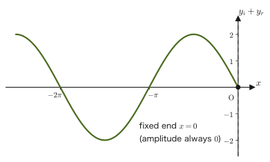
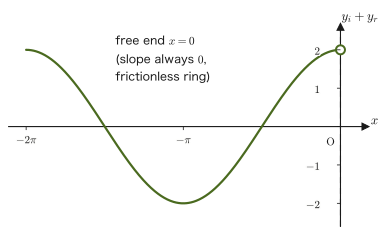
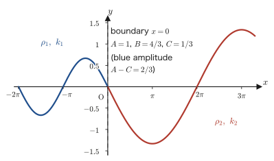
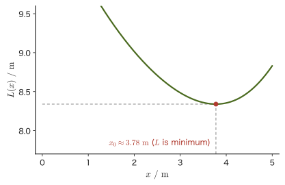

Chapter 14Reflection and Refraction of Light — Phase Changes, Fermat's Principle, and Total Internal Reflection
The scenery reflected on the surface of water, a straw dipped into a glass of water that appears bent, the reason a diamond sparkles—all of these occur because light is “reflected” or “refracted” at the boundary between different media. In high school physics, you should have learned the law of reflection (angle of incidence = angle of reflection) and the law of refraction ($n_1\sin\theta_1=n_2\sin\theta_2$) as formulas, and total internal reflection as a phenomenon that “occurs when the angle of refraction tries to exceed $90^\circ$.” In this chapter we examine where each of two things comes from: the change in the phase of light on reflection, and the two laws that determine the direction in which light travels. The reason for the phase change lies in the boundary conditions of a more fundamental phenomenon, the reflection and transmission of a wave traveling along a string. The law of reflection and the law of refraction, on the other hand, are derived from Huygens's principle and Fermat's principle.
In Chapter 13, we studied the measurement of the speed of light and the absolute refractive index $n=c_0/v$ ($c_0$: the speed of light in vacuum, $v$: the speed of light in the medium). This chapter picks up from there, and we begin with the question, “When a wave is reflected, how does its phase (the timing of its crests and troughs) change?” Just as with sound waves, water waves, and the vibrations of strings studied in Chapter 11, when light is reflected at a boundary, its phase may or may not be shifted by $\pi$ (half a wavelength), depending on the nature of the boundary. The shortest route to understanding this is to think in the same language of “boundary conditions” used for the reflection of sound and of strings—if we solve head-on, using the equation of a wave, what happens when strings of different linear densities are joined, the condition under which the phase is shifted by $\pi$ when light is reflected (which absolute refractive index is larger) comes into view. The direction in which light travels (the law of reflection and the law of refraction), on the other hand, is derived from Huygens's principle in Section 14.4 and Fermat's principle in Section 14.5.
In the second half, we study “Fermat's principle,” which explains the way light travels in a unified manner (light travels along the path for which the optical path length takes a stationary value), and, by actually calculating with it using differentiation (University Mathematics, Chapter 1), we derive the law of refraction $n_1\sin\theta_1=n_2\sin\theta_2$. You will see that the law of reflection and the law of refraction, which in high school you memorized as separate formulas, are in fact consequences of a single principle: “minimize the length of the path (more precisely, the optical path length).” Finally, we treat the fact that light is a kind of electromagnetic wave, the fact that the refractive index differs slightly with wavelength so that the dispersion seen in rainbows and prisms occurs, and total internal reflection and the principle of optical fibers.
- Derive the reflection of a string from boundary conditions (fixed end and free end), and confirm by equations that on reflection the phase may or may not change by $\pi$
- Find the amplitudes of the reflected and transmitted waves when strings of different linear densities are joined, by dividing into cases using the continuity condition and the smoothness condition
- Understand that the condition for reflection of a string (which linear density is larger) corresponds directly to the condition for reflection of light (which absolute refractive index is larger)
- Derive the law of reflection and the law of refraction (Snell's law), and derive the law of refraction from Fermat's principle by differentiation
- Explain that light is a kind of electromagnetic wave, and explain the dispersion of light (the dependence of the refractive index on wavelength), total internal reflection and the critical angle, and the principle of optical fibers
Source notes: Yasuhide Mochizuki, Physics Notes: Waves, pp. 22–28.
14.1 Fixed-End and Free-End Reflection — Derivation from Boundary Conditions
14.1.1 How the phase changes on reflection
To state the conclusion first: when light travels from a region of smaller absolute refractive index into a region of larger absolute refractive index and is reflected, the phase of the reflected light is shifted by $\pi$ (half a wavelength) relative to the incident light. Conversely, when light travels from a region of larger absolute refractive index into a region of smaller absolute refractive index and is reflected, the phase is not shifted. We consider this by analogy with a wave traveling along a string, dividing the cases into two kinds according to the nature of the boundary (Figure 14.1). Note that whenever we discuss phase in this chapter, we consider light incident nearly perpendicular to the boundary surface (for oblique incidence, the way the phase changes depends on the direction of polarization; and for total internal reflection the phase takes a value that is neither $0$ nor $\pi$). Moreover, the phase shift refers to the oscillation of the electric field of the light; the relation between the electric and magnetic fields will be studied in Chapter 42.
Let us verify head-on, using the one-dimensional equation of a wave, why this happens—and why the phase changes by $\pi$ in fixed-end reflection but does not change in free-end reflection.
14.1.2 Preparation for the analysis with the one-dimensional equation of a wave
Consider a string stretched over the region $x\leqq0$, and suppose that a wave is totally reflected at $x=0$. Assuming that the frequency (and hence the angular frequency $\omega$) and the wavelength (and hence the wavenumber $k=2\pi/\lambda$) do not change on reflection, we take the incident wave $y_i$ and the reflected wave $y_r$ to be as follows (as we learned in Section 11.3, Part II adopts the convention of writing a sinusoidal wave in the form $y=A\sin(\omega t-kx+\phi)$, so we let $\phi$ denote the constant that represents the phase shift of the reflected wave).
$$ \begin{cases} y_i = A\sin(\omega t - k x) \\ y_r = A\sin(\omega t + k x + \phi) \end{cases} \qquad (0\leqq \phi \lt 2\pi) $$The incident wave $y_i$ travels in the $+x$ direction, and the reflected wave $y_r$ in the $-x$ direction (a wave with the sign $+kx$ travels in the $-x$ direction—as confirmed in Section 11.4, the point satisfying $\omega t-kx=$ constant moves with time in the direction of increasing $x$, whereas the point satisfying $\omega t+kx=$ constant moves in the direction of decreasing $x$). The reason we gave the reflected wave the same angular frequency $\omega$ and wavenumber $k$ as the incident wave is that the reflected wave also travels along the same string (with the same wave speed $v$), so from the relation $\omega=vk$, the same $\omega$ implies the same $k$. We also gave it the same amplitude $A$ because the reflection is total (no energy is lost) (even if we let the amplitude of the reflected wave be $A'$, the boundary conditions in Sections 14.1.3 and 14.1.4 give $A'=A$). The only unknown is the phase shift $\phi$ of the reflected wave, and we shall determine $\phi$ from the boundary conditions.
Caution: Thinking in terms of a rope model
The “fixed end” and “free end” that we are about to consider are best thought of in terms of the following rope model. A fixed end is the case where the point $x=0$ of the rope is attached to a wall and held fixed. A free end is the case where a smooth (frictionless) vertical rod is erected at the position $x=0$, a ring is passed over the rod, and the end of the rope is tied to the ring, so that only the ring can move freely up and down along the rod. The mass of the ring is assumed to be so small as to be negligible (if it had mass, the inertia of the ring would change the way the wave is reflected). In both cases this is a model of a situation in which the wave is totally reflected at $x=0$ without losing energy.
14.1.3 Derivation of reflection at a fixed end
If the boundary is a fixed end, the medium (the string) at the boundary does not move at all. Therefore the boundary condition is
$$ \boxed{(y_i+y_r)\big|_{x=0} = 0} $$Substituting $x=0$ into this gives
$$ A\sin\omega t + A\sin(\omega t+\phi) = 0 $$Derivation: The phase shift in fixed-end reflection
Applying the sum-to-product formula for trigonometric functions $\sin\alpha+\sin\beta=2\sin\dfrac{\alpha+\beta}{2}\cos\dfrac{\alpha-\beta}{2}$ (let $\alpha=\omega t,\ \beta=\omega t+\phi$) to the left-hand side, we get
$$ A\sin\omega t + A\sin(\omega t+\phi) = 2A\sin\left(\omega t+\frac{\phi}{2}\right)\cos\frac{\phi}{2} $$(you can check with the addition theorem that expanding the right-hand side returns the left-hand side). Hence the boundary condition is
$$ 2A\sin\left(\omega t+\frac{\phi}{2}\right)\cos\frac{\phi}{2} = 0 $$and since $A\neq0$, $A$ can be canceled from the whole equation, giving
$$ \sin\left(\omega t+\frac{\phi}{2}\right)\cos\frac{\phi}{2} = 0 $$What matters here is that this equation must hold at all times $t$. If $\cos(\phi/2)\neq0$, then $\sin(\omega t+\phi/2)=0$ would have to hold for arbitrary $t$; but since $\sin$ is a function whose value changes with time, this breaks down with even a slight shift of $t$ (indeed, the values of $t$ satisfying $\sin(\omega t+\phi/2)=0$ are limited to the discrete times satisfying $\omega t+\phi/2=n\pi$ ($n$ an integer)). Therefore, for it to hold for arbitrary $t$ we must have
$$ \cos\frac{\phi}{2} = 0 $$Solving this gives $\dfrac{\phi}{2}=\left(n+\dfrac12\right)\pi$ ($n$ an integer), that is, $\phi=(2n+1)\pi$. Within the range $0\leqq\phi\lt2\pi$, this is satisfied only for $n=0$, so
\begin{equation} \phi = \pi \label{eq:14-fixed-phase} \end{equation}∎
Formula 14.1: The phase shift in fixed-end reflection
When the boundary is a fixed end (the displacement at the boundary is always $0$), the reflected wave is shifted in phase by $\pi$ (half a wavelength) relative to the incident wave: $\phi=\pi$. That is, the reflected wave is
$$ y_r = A\sin(\omega t+kx+\pi) = -A\sin(\omega t+kx) $$and so takes a form with its sign inverted.

14.1.4 Derivation of reflection at a free end
If the boundary is a free end, the medium at the boundary can move freely. Since the smooth rod exerts only a horizontal ($x$-direction) force on the ring and the mass of the ring is negligible, the vertical force acting on the ring—the vertical component $S\,\partial y/\partial x$ of the tension $S$ of the string—must be $0$. That is, the waveform at the boundary is always parallel to the $x$ axis (slope $0$). Therefore the boundary condition is
$$ \boxed{\dfrac{\partial}{\partial x}(y_i+y_r)\Big|_{x=0} = 0} $$($\partial/\partial x$ is read “round d by d x” and denotes partial differentiation—University Mathematics, Section 6.2—in which $t$ is held fixed and we differentiate with respect to $x$ alone; but here $y_i,y_r$ are by nature functions of the two variables $x$ and $t$, so the calculation is the same as ordinary differentiation with respect to $x$ with $t$ held fixed.)
Derivation: The phase shift in free-end reflection
Differentiating $y_i+y_r$ partially with respect to $x$ gives
$$ \frac{\partial}{\partial x}(y_i+y_r) = -kA\cos(\omega t-kx) + kA\cos(\omega t+kx+\phi) $$(differentiating $\sin$ with respect to $x$ yields a term with $-k\cos$ and a term with $+k\cos$—note that the coefficients of $x$ inside the $\sin$ are $-k,+k$, respectively). Substituting $x=0$, the boundary condition becomes
$$ -kA\cos\omega t + kA\cos(\omega t+\phi) = 0 $$Using the sum-to-product formula $\cos\alpha-\cos\beta=-2\sin\dfrac{\alpha+\beta}{2}\sin\dfrac{\alpha-\beta}{2}$ ($\alpha=\omega t+\phi,\ \beta=\omega t$) to rearrange the left-hand side, we get
$$ kA\left[\cos(\omega t+\phi)-\cos\omega t\right] = -2kA\sin\left(\omega t+\frac{\phi}{2}\right)\sin\frac{\phi}{2} = 0 $$Since $kA\neq0$, for the same reason as before (the equation must hold at all times $t$), we must have
$$ \sin\frac{\phi}{2} = 0 $$Solving this gives $\dfrac{\phi}{2}=n\pi$ ($n$ an integer), that is, $\phi=2n\pi$. Within the range $0\leqq\phi\lt2\pi$, this is satisfied only for $n=0$, so
\begin{equation} \phi = 0 \label{eq:14-free-phase} \end{equation}∎
Formula 14.2: The phase shift in free-end reflection
When the boundary is a free end (the slope at the boundary is always $0$), the reflected wave undergoes no change in phase relative to the incident wave: $\phi=0$. That is, the reflected wave is
$$ y_r = A\sin(\omega t+kx) $$which has the form obtained simply by replacing $-kx\to+kx$ in the equation of the incident wave.

Caution: The idealized free end and real reflection
Formula 14.2 is the result for an idealized free-end model, in which a ring of negligible mass moves along a frictionless vertical rod. A real end may carry a finite mass, be supported by a spring, or be connected to another string, and then the phase shift $\phi$ can take a value between $0$ and $\pi$. The fixed end ($\phi=\pi$) and the free end ($\phi=0$) are models that represent the two extremes (note that when another string is connected, as in Section 14.2, part of the wave is transmitted, and the phase shift of the reflected wave is determined to be exactly $0$ or $\pi$).
Example 14.1: Reflected-wave equations for fixed-end and free-end reflection
A wave with amplitude $A=0.050\ \mathrm{m}$, angular frequency $\omega=4\pi\ \mathrm{rad/s}$, and wavenumber $k=2\pi\ \mathrm{rad/m}$ travels in the $+x$ direction along a string occupying $x\leqq0$ and is reflected at $x=0$. Write out explicitly the reflected wave $y_r(x,t)$ (1) when the boundary is a fixed end and (2) when the boundary is a free end. Also, (3) for the fixed-end case, find the displacement $y_i+y_r$ of the resultant wave at $t=0,\ x=-0.25\ \mathrm{m}$.
Solution. The incident wave is $y_i=A\sin(\omega t-kx)=0.050\sin(4\pi t-2\pi x)\ \mathrm{m}$.
(1) By Formula 14.1 ($\phi=\pi$),
$$ y_r = A\sin(\omega t+kx+\pi) = -A\sin(\omega t+kx) = -0.050\sin(4\pi t+2\pi x)\ \mathrm{m} $$(2) By Formula 14.2 ($\phi=0$),
$$ y_r = A\sin(\omega t+kx) = 0.050\sin(4\pi t+2\pi x)\ \mathrm{m} $$(3) For the fixed-end case, at $t=0,\ x=-0.25\ \mathrm{m}$ we have
$$ y_i+y_r = 0.050\sin(0-2\pi\times(-0.25)) - 0.050\sin(0+2\pi\times(-0.25)) $$ $$ = 0.050\sin(0.5\pi) - 0.050\sin(-0.5\pi) = 0.050\times1 - 0.050\times(-1) = 0.10\ \mathrm{m} $$14.2 Reflection and Transmission Conditions for Strings of Different Linear Densities
14.2.1 The model and the boundary conditions
In the previous section we considered the case in which the string reflects the wave completely (all of the wave energy is bounced back). Next, let us consider the case in which strings of different linear densities are joined with the boundary at $x=0$. In this case, part of the wave is transmitted through the boundary and the rest is reflected. The speed of a wave on a string is determined by the linear density $\rho$ and the tension $S$ as $v=\sqrt{S/\rho}$ (Section 12.6), so if we let $\rho_1$ be the linear density in the region $x\lt0$ and $\rho_2$ the linear density in the region $x\gt0$, we have
$$ v_1=\sqrt{\frac{S}{\rho_1}},\qquad v_2=\sqrt{\frac{S}{\rho_2}} $$(Note that the tension $S$ is the same throughout the string—since the string is connected, if the tension differed on the two sides of the boundary, an unbalanced force would act at that point.)
Note that the frequency (angular frequency $\omega$) of the reflected and transmitted waves at the boundary $x=0$ is equal to that of the incident wave, but the wavelength (and hence the wavenumber) of the transmitted wave differs from that of the incident wave. When a wave passes into a medium in which its speed is different, the frequency does not change and only the wavelength changes (while the relation $v=f\lambda$ is maintained); this is the same fact that we confirmed for the refraction of general waves in Section 11.8. We therefore assume the incident wave $y_i$, the transmitted wave $y_t$, and the reflected wave $y_r$ to be as follows.
$$ \begin{cases} y_i = A\sin(\omega t - k_1 x) \\ y_t = B\sin(\omega t - k_2 x + \alpha) \\ y_r = C\sin(\omega t + k_1 x + \beta) \end{cases} \qquad \left( \begin{aligned} &A,B,C\gt0,\quad 0\leqq\alpha,\beta\lt2\pi\\ &k_1=\frac{2\pi}{\lambda_1},\ k_2=\frac{2\pi}{\lambda_2} \end{aligned} \right) $$There are four unknowns: the amplitudes $B,C$ of the transmitted and reflected waves and the phase shifts $\alpha,\beta$. We determine them from the condition that the string is “continuously and smoothly connected” at the boundary $x=0$. Physically, this is a natural requirement arising from the nature of a string: the string does not break (the continuity condition), and the slope of the string does not change abruptly, forming a kink (the smoothness condition; otherwise an infinite force would act at the single point of the boundary). Written as equations,
$$ \begin{cases} (y_i+y_r)\big|_{x=0} = y_t\big|_{x=0} & \text{(continuity condition)} \cdots \text{Ⓐ} \\[4pt] \dfrac{\partial}{\partial x}(y_i+y_r)\Big|_{x=0} = \dfrac{\partial}{\partial x}y_t\Big|_{x=0} & \text{(smoothness condition)} \cdots \text{Ⓑ} \end{cases} $$14.2.2 Expansion of the boundary conditions — derivation of Eqs. ①–④
Derivation: Expansion of the continuity condition Ⓐ
Substituting $x=0$, Eq. Ⓐ becomes
$$ A\sin\omega t + C\sin(\omega t+\beta) = B\sin(\omega t+\alpha) $$Moving the right-hand side to the left-hand side and rearranging, we obtain
$$ A\sin\omega t + C\sin(\omega t+\beta) - B\sin(\omega t+\alpha) = 0 $$Expanding with the addition theorem $\sin(\omega t+\theta)=\sin\omega t\cos\theta+\cos\omega t\sin\theta$ applied to $\beta,\alpha$, and collecting the coefficients of $\sin\omega t$ and $\cos\omega t$, we obtain
$$ (A+C\cos\beta-B\cos\alpha)\sin\omega t + (C\sin\beta - B\sin\alpha)\cos\omega t = 0 $$∎
Why must the coefficients of $\sin\omega t$ and $\cos\omega t$ each be $0$?
The equation above requires that a linear combination of the two functions $\sin\omega t,\cos\omega t$, which contain the time $t$ and are of “different types,” be equal to $0$ at all times $t$. $\sin\omega t$ and $\cos\omega t$ are independent functions, neither of which can be expressed as a constant multiple of the other (linear independence). If even one of the two coefficients were not $0$, the value of the whole expression would change when $t$ is shifted even slightly, and it could not remain identically $0$ (for example, comparing the two equations obtained by substituting $t=0$ and $t=\pi/(2\omega)$ shows that the coefficients must each be $0$ independently). Therefore, the coefficient of $\sin\omega t$ and the coefficient of $\cos\omega t$ must each be $0$ on its own. This is the same line of reasoning that we used when we determined $\phi$ in Section 14.1 (narrowing the phase down to a single value from the condition that the equation “holds at any time”).
Therefore, the continuity condition Ⓐ gives the following two equations.
$$ \begin{cases} C\sin\beta - B\sin\alpha = 0 & \cdots① \\ A + C\cos\beta - B\cos\alpha = 0 & \cdots② \end{cases} $$Math Tool: What it means to “set up an identity in $t$”
Equations ① and ② (and ③ and ④, which we derive below) are all obtained from the condition that “a linear combination of $\sin\omega t,\cos\omega t$ equals $0$ for any $t$”—that is, from an identity in $t$. This is exactly the same idea as concluding, for an identity between polynomials, that “the coefficients of the terms of the same degree on both sides are equal,” and it is a basic technique for finding the unknowns (here $B,C,\alpha,\beta$).
Derivation: Expansion of the smoothness condition Ⓑ
Taking the partial derivative of each of $y_i+y_r,\ y_t$ with respect to $x$, we obtain
$$ \frac{\partial}{\partial x}(y_i+y_r) = -k_1A\cos(\omega t-k_1x)+k_1C\cos(\omega t+k_1x+\beta),\qquad \frac{\partial}{\partial x}y_t = -k_2B\cos(\omega t-k_2x+\alpha) $$and, substituting $x=0$, Eq. Ⓑ becomes
$$ -k_1A\cos\omega t + k_1C\cos(\omega t+\beta) = -k_2B\cos(\omega t+\alpha) $$Moving the right-hand side to the left and rearranging, we obtain
$$ -k_1A\cos\omega t + k_1C\cos(\omega t+\beta) + k_2B\cos(\omega t+\alpha) = 0 $$Expanding with the addition theorem $\cos(\omega t+\theta)=\cos\omega t\cos\theta-\sin\omega t\sin\theta$ and collecting the coefficients of $\sin\omega t,\cos\omega t$, we obtain
$$ (-k_1A+k_1C\cos\beta+k_2B\cos\alpha)\cos\omega t - (k_1C\sin\beta+k_2B\sin\alpha)\sin\omega t = 0 $$∎
For exactly the same reason as in the case of the continuity condition Ⓐ (the coefficients of $\sin\omega t,\cos\omega t$ must each be $0$), the smoothness condition Ⓑ gives the following two equations.
$$ \begin{cases} -k_1A + k_1C\cos\beta + k_2B\cos\alpha = 0 & \cdots③ \\ k_1C\sin\beta + k_2B\sin\alpha = 0 & \cdots④ \end{cases} $$14.2.3 The four cases and their solutions
Equations ①–④ are simultaneous equations for the unknowns $B,C,\alpha,\beta$. First, let us eliminate $C\sin\beta$ from ① and ④. From ①, $C\sin\beta=B\sin\alpha$, so substituting this into ④ gives
$$ k_1B\sin\alpha + k_2B\sin\alpha = (k_1+k_2)B\sin\alpha = 0 $$Since $(k_1+k_2)B\neq0$ ($k_1,k_2,B$ are all positive),
$$ \sin\alpha=0 \qquad\therefore\ \alpha=0\text{ or }\pi $$holds. Substituting $\sin\alpha=0$ back into the original Eq. ①, $C\sin\beta=B\sin\alpha=0$, we also find, since $C\neq0$, that $\sin\beta=0$, that is, $\beta=0$ or $\pi$. The possible combinations are therefore narrowed down to the following four.
$$ (\alpha,\beta)=(0,0),\ (\pi,0),\ (0,\pi),\ (\pi,\pi) $$Since Eqs. ① and ④ have already been used to obtain $\sin\alpha=\sin\beta=0$, it remains to substitute each of these four combinations into the remaining Eqs. ② and ③, find $B,C$, and narrow down the possibilities by whether $B\gt0,\ C\gt0$ are satisfied (we defined the amplitudes to be positive numbers).
Derivation: The four cases
[1] The case $(\alpha,\beta)=(0,0)$. Equations ② and ③ become
$$ \begin{cases} A+C-B=0 \\ -k_1A+k_1C+k_2B=0 \end{cases} $$From the first equation, $C=B-A$. Substituting this into the second equation gives $-k_1A+k_1(B-A)+k_2B=0$, that is, $-2k_1A+(k_1+k_2)B=0$, so
$$ B=\frac{2k_1}{k_1+k_2}A\quad(\gt0,\ \text{always holds}),\qquad C=\frac{k_1-k_2}{k_1+k_2}A $$Since $C\gt0$ (the amplitude is positive) is required, the condition is $k_1\gt k_2$, that is, $\lambda_1\lt\lambda_2$ (and hence $v_1\lt v_2$ and $\rho_1\gt\rho_2$).
[2] The case $(\alpha,\beta)=(\pi,0)$. Equations ② and ③ become
$$ \begin{cases} A+C+B=0 \\ -k_1A+k_1C-k_2B=0 \end{cases} $$From the first equation, $C=-A-B$. Substituting this into the second equation gives $-k_1A+k_1(-A-B)-k_2B=0$, that is, $-2k_1A-(k_1+k_2)B=0$, so
$$ B=-\frac{2k_1}{k_1+k_2}A\ (\lt0),\qquad C=-A-B=\frac{k_1-k_2}{k_1+k_2}A $$is obtained. $B$ is always negative. This contradicts the assumption that the amplitude $B$ must be positive, so this case is not admissible.
[3] The case $(\alpha,\beta)=(0,\pi)$. Equations ② and ③ become
$$ \begin{cases} A-C-B=0 \\ -k_1A-k_1C+k_2B=0 \end{cases} $$From the first equation, $C=A-B$. Substituting into the second equation and rearranging, we obtain
$$ B=\frac{2k_1}{k_1+k_2}A\quad(\gt0,\ \text{always holds}),\qquad C=\frac{k_2-k_1}{k_1+k_2}A $$Since $C\gt0$ is required, the condition is $k_2\gt k_1$, that is, $\lambda_1\gt\lambda_2$ (and hence $v_1\gt v_2$ and $\rho_1\lt\rho_2$).
[4] The case $(\alpha,\beta)=(\pi,\pi)$. Equations ② and ③ become
$$ \begin{cases} A-C+B=0 \\ -k_1A-k_1C-k_2B=0 \end{cases} $$From the first equation, $C=A+B$. Substituting this into the second equation gives $-k_1A-k_1(A+B)-k_2B=0$, that is, $-2k_1A-(k_1+k_2)B=0$, so $B=-\dfrac{2k_1}{k_1+k_2}A\lt0$. As in [2], the amplitude is negative, so this case is not admissible either.
∎
To summarize, at a boundary between strings of different linear densities, the phase shift $\beta$ of the reflected wave is determined to be one of exactly two values, depending on which of $\rho_1$ and $\rho_2$ is larger (the phase shift $\alpha$ of the transmitted wave is $0$ in both cases). Note also that when $k_1=k_2$ ($\rho_1=\rho_2$), both in [1] and in [3] we get $C=0$ and $B=A$, so no reflected wave arises and the wave is transmitted as it is (this is the same as if the same string simply continued with nothing joined to it). The calculation that checks the amplitudes $B,C$ of the transmitted and reflected waves with concrete numerical values is carried out in Example 14.2.

ρ2), relative to the incident amplitude A=1, the transmitted amplitude is B=4/3 and the reflected amplitude is C=1/3. The curves join continuously at the boundary x=0" style="max-width:600px;width:100%">Example 14.2: Amplitudes of the reflected and transmitted waves for strings of different linear densities
A string under tension $S=10\ \mathrm{N}$ consists of a part with linear density $\rho_1=4.0\ \mathrm{kg/m}$ ($x\lt0$) and a part with $\rho_2=1.0\ \mathrm{kg/m}$ ($x\gt0$). When a wave of frequency $f=1.0\ \mathrm{Hz}$ and amplitude $A=2.0\ \mathrm{cm}$ is sent in from the $x\lt0$ side, find the amplitude $B$ of the transmitted wave and the amplitude $C$ of the reflected wave. Also answer which case (fixed-end-like or free-end-like) the reflection and transmission correspond to.
Solution. From $v=\sqrt{S/\rho}$ for the speed on a string (Section 12.6),
$$ v_1=\sqrt{\frac{10}{4.0}}=1.58\ \mathrm{m/s},\qquad v_2=\sqrt{\frac{10}{1.0}}=3.16\ \mathrm{m/s} $$Since the angular frequency $\omega=2\pi f=2\pi\ \mathrm{rad/s}$ is common to both sides, the wavenumber is obtained from $k=\omega/v$ as
$$ k_1=\frac{2\pi}{v_1}=3.97\ \mathrm{rad/m},\qquad k_2=\frac{2\pi}{v_2}=1.99\ \mathrm{rad/m} $$Since $\rho_1\gt\rho_2$ (hence $v_1\lt v_2$, $k_1\gt k_2$), this corresponds to case [1] ($\alpha=0,\beta=0$) above. The formulas are
$$ B=\frac{2k_1}{k_1+k_2}A,\qquad C=\frac{k_1-k_2}{k_1+k_2}A $$but since $k_1/k_2=v_2/v_1=\sqrt{\rho_1/\rho_2}=\sqrt{4.0}=2.0$, we have $k_1=2k_2$, a conveniently simple ratio. Using this,
$$ B=\frac{2\times2k_2}{2k_2+k_2}A=\frac{4}{3}A=\frac{4}{3}\times2.0=2.7\ \mathrm{cm},\qquad C=\frac{2k_2-k_2}{2k_2+k_2}A=\frac{1}{3}A=\frac{1}{3}\times2.0=0.67\ \mathrm{cm} $$Case [1] has $(\alpha,\beta)=(0,0)$, and the phase shift $\beta=0$ of the reflected wave has the same form as the reflection at a free end ($\phi=0$) in Section 14.1, so this is a “free-end-like” reflection (we will organize this correspondence in Section 14.3).
14.3 The Physical Meaning of the Reflection Conditions — From Strings to Light
Let us organize the results of Section 14.2. In case [1], $(\alpha,\beta)=(0,0)$, the transmitted wave and the reflected wave are
$$ y_t = B\sin(\omega t-k_2x),\qquad y_r = C\sin(\omega t+k_1x) $$(under the condition $\rho_1\gt\rho_2$). In case [3], $(\alpha,\beta)=(0,\pi)$, they are
$$ y_t = B\sin(\omega t-k_2x),\qquad y_r = C\sin(\omega t+k_1x+\pi) $$(under the condition $\rho_1\lt\rho_2$). Comparing the equation of the reflected wave with $y_r=A\sin(\omega t+kx+\phi)$ of Section 14.1, we see that case [1] has $\phi=0$ (the same form as reflection at a free end) and case [3] has $\phi=\pi$ (the same form as reflection at a fixed end). That is,
- When $\rho_1\gt\rho_2$ (the vibration propagates from a heavy string to a light string), the reflection has the same form as reflection at a free end (no phase shift).
- When $\rho_1\lt\rho_2$ (the vibration propagates from a light string to a heavy string), the reflection has the same form as reflection at a fixed end (the phase changes by $\pi$).
This result is also intuitively convincing—a wave traveling from a light string toward a heavy (hard-to-move) string can hardly shake the heavy string, and bounces back as if it had hit a “wall” (close to a fixed end). Conversely, a wave traveling from a heavy string toward a light (easy-to-move) string shakes the light string strongly and is reflected in a form close to a “free end,” which offers little resistance.
14.3.1 Correspondence among $\rho,v,n$
Here, let us check the relation between the magnitudes of $\rho$ and $v$. Since $v=\sqrt{S/\rho}$ ($S$ is the common tension), the larger the linear density, the smaller the speed—that is, the following correspondence holds:
$$ \begin{cases} \rho_1\gt\rho_2 \iff v_1\lt v_2 \\ \rho_1\lt\rho_2 \iff v_1\gt v_2 \end{cases} $$Furthermore, the absolute refractive index is defined by $n=c_0/v$ ($c_0$: the speed of light in vacuum; Section 13.3), so the smaller $v$ is, the larger $n$ is. That is, the following correspondence also holds:
$$ \begin{cases} v_1\lt v_2 \iff n_1\gt n_2 \\ v_1\gt v_2 \iff n_1\lt n_2 \end{cases} $$The property of strings that “larger linear density = slower wave” corresponds directly to the property of light that “larger absolute refractive index = slower light.” Linking these together in a single chain, we obtain the following table of correspondences.
Formula 14.3: Correspondence among linear density, speed, and absolute refractive index, and the type of reflection
| Case of a string | Corresponding case of light | Type of reflection |
|---|---|---|
| $\rho_1\gt\rho_2$ ($v_1\lt v_2$) | $n_1\gt n_2$ | Reflection at a free end (no phase change) |
| $\rho_1\lt\rho_2$ ($v_1\gt v_2$) | $n_1\lt n_2$ | Reflection at a fixed end (the phase changes by $\pi$) |
That is, when light travels from a medium of larger absolute refractive index into a medium of smaller absolute refractive index and is reflected ($n_1\gt n_2$), the reflection is a reflection at a free end (no phase change); when light travels from a medium of smaller absolute refractive index into a medium of larger absolute refractive index and is reflected ($n_1\lt n_2$), the reflection is a reflection at a fixed end (the phase changes by $\pi$). This is the derivation, from the reflection of waves on strings, of the content that was stated in advance, as a conclusion only, at the beginning of Section 14.1 (Figure 14.1).
Intuition: Why does the larger absolute refractive index correspond to the “heavy string”?
The larger the absolute refractive index $n$ of a medium, the smaller the speed of light $v=c_0/n$ in it. For a string, too, the larger the linear density $\rho$ (the heavier the string), the harder it is to move the string under the same tension, and the smaller the wave speed $v=\sqrt{S/\rho}$ becomes. That is, “$n$ is large,” “$v$ is small,” and “$\rho$ is large” are changes in the same direction, and the correspondence $n\propto1/v\propto\sqrt{\rho}$ is the essence of this analogy. The mechanism by which light slows down inside glass or water is itself something we study in the field of electromagnetism.
14.3.2 Mathematical confirmation — checking the correspondence from strings to light
Let us confirm, using the results of Section 14.2, that this correspondence is not merely a figure of speech.
Two limits. If the second string is extremely light ($\rho_2\to0$, that is, $k_2\to0$), then $B=\dfrac{2k_1}{k_1+k_2}A\to2A$, $C=\dfrac{k_1-k_2}{k_1+k_2}A\to A$, and $\beta=0$, which coincides with reflection at a free end where the boundary is attached to a ring (the amplitude of the reflected wave is $A$, the same as that of the incident wave, and the boundary is an antinode of amplitude $2A$). Conversely, if the second string is extremely heavy ($\rho_2\to\infty$, $k_2\to\infty$), then $B\to0$, $C\to A$, and $\beta=\pi$, which coincides with reflection at a fixed end where the boundary does not move. The idealized ends of Section 14.1 are reproduced exactly as these two limits.
Amplitude ratio and absolute refractive index. Since $k=\omega/v=\omega n/c_0$, we have $k\propto n$ if $\omega$ is common. If we include the phase shift of the reflected wave in the sign and write $y_r=C'\sin(\omega t+k_1x)$ (in case [1], $C'=C\gt0$; in case [3],$\sin(\theta+\pi)=-\sin\theta$, so $C'=-C\lt0$), then cases [1] and [3] can be written together as
$$ \frac{C'}{A}=\frac{k_1-k_2}{k_1+k_2}=\frac{n_1-n_2}{n_1+n_2} $$If $n_1\lt n_2$, then $C'\lt0$ (the phase changes by $\pi$); if $n_1\gt n_2$, then $C'\gt0$ (no phase change). The fraction of the wave that is reflected (the reflectance, a ratio of energies) is given by $(C'/A)^2$ (Example 14.3).
Conservation of energy. The energy that a wave on a string carries per unit time is $\tfrac12\rho v\omega^2\times(\text{amplitude})^2$, and since $\rho v=Sk/\omega$, it is proportional to the square of the amplitude and to $k$. Therefore the relation $k_1A^2=k_1C^2+k_2B^2$ should hold among the energy flows of the incident, reflected, and transmitted waves. Indeed, substituting $B,C$ of case [1] into the right-hand side, we obtain
$$ k_1C^2+k_2B^2=\frac{k_1(k_1-k_2)^2+4k_1^2k_2}{(k_1+k_2)^2}A^2=\frac{k_1(k_1+k_2)^2}{(k_1+k_2)^2}A^2=k_1A^2 $$which agrees with the left-hand side (the same holds for case [3]). With the numerical values of Example 14.2 as well, measuring $A$ in $\mathrm{cm}$, we can confirm that $k_1A^2=15.90$ and $k_1C^2+k_2B^2=15.90$.
Example 14.3: Reflection at the boundary between air and glass
Let the absolute refractive index of air be $n_{\text{air}}\fallingdotseq1.0$ and that of glass be $n_{\text{glass}}\fallingdotseq1.5$. Answer how the phase of the reflected light changes relative to the incident light (1) when light traveling in air is reflected at the surface of glass, and (2) when light traveling in glass is reflected at the boundary with air. (3) For the situation in (1), how many times as large as the amplitude of the incident light is the amplitude of the reflected light? (Answer with the sign.) Also, what is the reflectance (the fraction of the intensity)?
Solution. (1) Since the light goes from air to glass, $n_1=n_{\text{air}}\fallingdotseq1.0,\ n_2=n_{\text{glass}}\fallingdotseq1.5$, and $n_1\lt n_2$. By Formula 14.3, this corresponds to reflection at a fixed end, so the phase of the reflected light changes by $\pi$ relative to the incident light.
(2) Since the light goes from glass to air, $n_1=n_{\text{glass}}\fallingdotseq1.5,\ n_2=n_{\text{air}}\fallingdotseq1.0$, and $n_1\gt n_2$. By Formula 14.3, this corresponds to reflection at a free end, so the phase of the reflected light does not change.
That is, only when light travels “from an optically less dense medium to an optically denser one” (from the medium with the smaller absolute refractive index to the one with the larger) and is reflected does the phase change by $\pi$. This fact plays an important role later, when we consider the interference of light in thin films (anti-reflection coatings, etc.).
(3) Applying the relation $C'/A=(n_1-n_2)/(n_1+n_2)$ of Section 14.3.2 to (1), we obtain
$$ \frac{C'}{A}=\frac{1.0-1.5}{1.0+1.5}=-0.20 $$The negative sign indicates that the phase changes by $\pi$. The fraction of the intensity that is reflected (the reflectance) is $(C'/A)^2=(-0.20)^2=0.040$, that is, about $4\%$ (when light strikes a glass window at nearly normal incidence, about $4\%$ of it is reflected at the surface).
14.4 The Laws of Reflection and Refraction
So far, through the reflection and transmission of waves traveling along a string, we have examined “how the phase changes upon reflection.” From here on, we confirm how the direction in which light travels changes at a boundary—the law of reflection and the law of refraction, familiar from high school physics. For waves in general, these laws were already derived in Section 11.8 from Huygens's principle (the principle that each point on a wavefront becomes the source of a new wave), as Law 11.5 and Law 11.6, which are expressed using the relative refractive index $n_{AB}=v_A/v_B$ for media $A,B$. In this section we rewrite them for the case of light, in a form that uses the absolute refractive indices $n_1,n_2$ (refractive indices measured relative to vacuum; Section 13.3) and confirm them, and in the next section we derive them once more, by differentiation, from yet another, unifying principle (Fermat's principle).
Let us also check how the notation corresponds. In Chapter 11 we wrote $A,B$ for the media, $\theta_i$ for the angle of incidence, $\theta_r$ for the angle of reflection, and $\theta_t$ for the angle of refraction; in this chapter we write $1,2$ for the media, $\theta_1$ for the angle of incidence, $\theta_1'$ for the angle of reflection, and $\theta_2$ for the angle of refraction ($\theta_i=\theta_1$, $\theta_r=\theta_1'$, $\theta_t=\theta_2$, $v_A=v_1$, $v_B=v_2$). The incident light ray, the reflected ray, the refracted ray, and the normal to the boundary surface all lie in one and the same plane (the plane of incidence).
Law 14.1: Law of reflection
\begin{equation} \theta_1\ (\text{angle of incidence}) = \theta_1'\ (\text{angle of reflection}) \label{eq:14-law-reflection} \end{equation}The incident ray, the reflected ray, and the normal lie in a single plane, and the angle of incidence equals the angle of reflection. This can be proved geometrically from the way wavefronts spread out (Huygens's principle; Law 11.5, with the derivation repeated in the derivation box below).
Law 14.2: Law of refraction (Snell's law)
If the angle of incidence is $\theta_1$ and the angle of refraction is $\theta_2$, then
\begin{equation} \frac{\sin\theta_1}{\sin\theta_2} = \frac{v_1}{v_2} = \frac{\lambda_1}{\lambda_2} = \frac{n_2}{n_1} \label{eq:14-law-refraction} \end{equation}holds ($v_1,v_2$: the speeds of light in the respective media; $\lambda_1,\lambda_2$: the wavelengths in the respective media; $n_1,n_2$: the absolute refractive indices of the respective media). The refracted ray also lies in the plane of incidence. This expresses, in terms of the angle of incidence and the angle of refraction, the same content as the defining equation $n_{12}=v_1/v_2$ of the relative refractive index in Chapter 13.
Derivation: Equality of the expressions in the law of refraction
First, consider $v_1/v_2=\lambda_1/\lambda_2$. The frequency $f$ does not change when light crosses the boundary (for the same reason we confirmed for the string in Section 14.2—if the waves on the two sides of the boundary did not oscillate at the same rhythm, the displacements at the boundary would fail to match). Hence $v_1=f\lambda_1,\ v_2=f\lambda_2$, and
$$ \frac{v_1}{v_2}=\frac{f\lambda_1}{f\lambda_2}=\frac{\lambda_1}{\lambda_2} $$($f$ can be canceled). Next, consider $v_1/v_2=n_2/n_1$. From the definition of the absolute refractive index $n=c_0/v$ (Section 13.3), we have $v_1=c_0/n_1,\ v_2=c_0/n_2$, so
$$ \frac{v_1}{v_2}=\frac{c_0/n_1}{c_0/n_2}=\frac{c_0}{n_1}\times\frac{n_2}{c_0}=\frac{n_2}{n_1} $$($c_0$ can be canceled). The proof of $\sin\theta_1/\sin\theta_2=v_1/v_2$ itself rests on a geometric consideration of wavefronts (Huygens's principle, Law 11.6). We recall its main points here. Let the two points $\mathrm{O},\mathrm{R}$ on the boundary be “the point at which one end of the wavefront of the incident plane wave first reaches the boundary” and “the point at which the other end reaches the boundary after a time $\Delta t$.” The distance $v_1\Delta t$ that the other end of the wavefront travels during $\Delta t$ is, from the relations in a right triangle, $v_1\Delta t=\overline{\mathrm{OR}}\sin\theta_1$. On the other hand, the elementary wavelet spreading from point $\mathrm{O}$ into medium 2 expands to radius $v_2\Delta t$ during the time $\Delta t$, and the tangent drawn from $\mathrm{R}$ to this circle is the wavefront of the refracted wave, so $v_2\Delta t=\overline{\mathrm{OR}}\sin\theta_2$. Eliminating $\overline{\mathrm{OR}}$ from the two equations, we obtain
$$ \overline{\mathrm{OR}}=\frac{v_1\Delta t}{\sin\theta_1}=\frac{v_2\Delta t}{\sin\theta_2}\qquad\therefore\ \frac{\sin\theta_1}{\sin\theta_2}=\frac{v_1}{v_2} $$In the case of reflection as well, the reflected wave spreads in medium 1 at the same speed $v_1$, so $v_1\Delta t=\overline{\mathrm{OR}}\sin\theta_1'$, and from $\overline{\mathrm{OR}}\sin\theta_1=\overline{\mathrm{OR}}\sin\theta_1'$ we obtain $\theta_1=\theta_1'$. In Section 14.5 of this chapter, we derive the same Eq. \eqref{eq:14-law-refraction} once more by differentiation, from a principle independent of this one (Fermat's principle).
∎
Example 14.4: Calculating the angle of refraction
Light is incident at an angle of incidence $\theta_1=30^\circ$ from a medium of absolute refractive index $n_1=1.0$ (air) into a medium of absolute refractive index $n_2=1.5$ (glass). Find the angle of refraction $\theta_2$.
Solution. Solving $\sin\theta_1/\sin\theta_2=n_2/n_1$ of Law 14.2 (Eq. \eqref{eq:14-law-refraction}) for $\sin\theta_2$, we get
$$ \sin\theta_2=\frac{n_1}{n_2}\sin\theta_1=\frac{1.0}{1.5}\times\sin30^\circ=\frac{1.0}{1.5}\times0.500=0.333 $$Therefore
$$ \theta_2=\arcsin(0.333)\fallingdotseq19.5^\circ $$Since $n_2\gt n_1$ (going from air to glass, that is, from the smaller absolute refractive index to the larger), we have $\theta_2\lt\theta_1$, and the light bends toward the normal—this is exactly the rule of thumb from high school physics that “light entering a denser medium bends toward the normal.”
14.5 Fermat's Principle — The Optical Path Length Takes a Minimum (Stationary) Value
14.5.1 Fermat's principle
The law of reflection and the law of refraction can also be derived from Huygens's principle (how wavefronts spread), but there is another, very clear and unifying way of thinking about how light travels. It is the following principle, named after the 17th-century mathematician Pierre de Fermat.
Law 14.3: Fermat's principle
When light travels from a starting point to an ending point, it follows a path along which the optical path length takes a stationary value (even if the path is varied slightly, the change in the optical path length is $0$ to first order). In many cases that stationary value is a local minimum, and the light then arrives in the shortest time.
The “optical path length” (also called the optical distance) is the quantity $n\ell$ obtained by multiplying the geometric distance $\ell$ by the absolute refractive index $n$ of that segment (if the medium varies from place to place, these products are summed along the path). Why is the optical path length tied to “time”? The speed of light in a medium is $v=c_0/n$, so the time needed to travel a distance $\ell$ is $t=\ell/v=n\ell/c_0$; that is, the time is the optical path length $n\ell$ divided by $c_0$ (the speed of light in vacuum, a constant), and so it is proportional to the optical path length. In other words, minimizing the optical path length means the same thing as minimizing the time taken. A “stationary value” is a value at which the rate of change is exactly $0$, like the crest of a hill or the bottom of a valley, and in most cases it is the bottom of a valley (a local minimum). In the calculations below in this chapter as well, we solve $L'(x)=0$ (stationarity) and confirm from $L''(x)\gt0$ that it is a local minimum. Note also that in Chapter 16 we use the optical path length as a tool for measuring the path difference in the interference of light.
Intuition: The lifeguard's shortest-time path
Here is a commonly used analogy. Suppose a lifeguard on a beach wants to go and rescue a person drowning in the sea in the shortest possible time. The speed at which the lifeguard can run on land is greater than the speed at which the lifeguard can swim in water. In that case, going straight along the straight line connecting the beach and the sea is not necessarily the shortest-time route—even if the distance run on land is made somewhat longer, shortening the distance swum in the water can get the lifeguard there sooner, because more of the trip is spent in the fast medium (land). The optimal route crosses the boundary between the beach and the sea (the water's edge) at one particular angle. This has mathematically exactly the same structure as the reason why light “bends” its path (refracts) at the boundary between media of different absolute refractive indices. In fact, at the point where it crosses the boundary, the shortest-time path satisfies $\sin\theta_1/\sin\theta_2=v_1/v_2$ ($\theta_1,\theta_2$ are the angles with the normal, and $v_1,v_2$ are the speeds on the respective sides). In the next subsection we use differentiation to verify that this coincides exactly with Snell's law.
14.5.2 Deriving the law of refraction from Fermat's principle
Suppose that light travels from a point $\mathrm{P}_1$ in a medium of absolute refractive index $n_1$ to a point $\mathrm{P}_2$ in a medium of absolute refractive index $n_2$. Take coordinates with the origin on the boundary, and let $\mathrm{P}_1=(0,h_1)$ (at perpendicular distance $h_1$ from the boundary) and $\mathrm{P}_2=(d,-h_2)$ (at perpendicular distance $h_2$ from the boundary and displaced horizontally by $d$) (the setup of Figure 14.6). If the light passes through a point $(x,0)$ on the boundary, the optical path length $L$ as a function of $x$ is
\begin{equation} L(x) = n_1\sqrt{x^2+h_1^2} + n_2\sqrt{(d-x)^2+h_2^2} \label{eq:14-fermat-L} \end{equation}(by the Pythagorean theorem, the geometric distance from $\mathrm{P}_1$ to $(x,0)$ is $\sqrt{x^2+h_1^2}$, and that from $(x,0)$ to $\mathrm{P}_2$ is $\sqrt{(d-x)^2+h_2^2}$). According to Fermat's principle, the path the light actually takes (the actual value of $x$) is the $x$ that minimizes $L(x)$. To find the minimum value (local minimum) of a function, we differentiate and set the result equal to $0$—this uses the property we learned in University Mathematics, Section 1.4: the derivative $L'(x)$ represents the “rate of change of $L$ with respect to $x$,” and at the crest of a hill or the bottom of a valley (an extremum) the instantaneous rate of change is exactly $0$.
Derivation: Deriving Snell's law from Fermat's principle
Differentiate Eq. \eqref{eq:14-fermat-L} with respect to $x$. Using the chain rule for differentiating composite functions, which you learned in high school, we have $\dfrac{\dd}{\dd x}\sqrt{u(x)}=\dfrac{u'(x)}{2\sqrt{u(x)}}$. Letting $u_1(x)=x^2+h_1^2$ gives $u_1'(x)=2x$, and letting $u_2(x)=(d-x)^2+h_2^2$ gives $u_2'(x)=-2(d-x)$ (differentiating the inner function $d-x$ with respect to $x$ gives $-1$), so
$$ L'(x) = n_1\cdot\frac{2x}{2\sqrt{x^2+h_1^2}} + n_2\cdot\frac{-2(d-x)}{2\sqrt{(d-x)^2+h_2^2}} = \frac{n_1x}{\sqrt{x^2+h_1^2}} - \frac{n_2(d-x)}{\sqrt{(d-x)^2+h_2^2}} $$Now look at the angle $\theta_1$ in Figure 14.6 (the angle, at the crossing point $(x,0)$, between the ray from $\mathrm{P}_1$ and the normal). In the right triangle that has $\theta_1$ as one of its angles (with vertices $\mathrm{P}_1$, $\mathrm{O}$, and $(x,0)$), the side opposite $\theta_1$ is the horizontal length $x$, and the hypotenuse is the length $\sqrt{x^2+h_1^2}$ from $\mathrm{P}_1$ to $(x,0)$, so $\sin\theta_1=x/\sqrt{x^2+h_1^2}$ (“opposite over hypotenuse”). Similarly, the side opposite the angle of refraction $\theta_2$ is the horizontal length $d-x$, and the hypotenuse is $\sqrt{(d-x)^2+h_2^2}$, so $\sin\theta_2=(d-x)/\sqrt{(d-x)^2+h_2^2}$. Therefore,
$$ L'(x) = n_1\sin\theta_1 - n_2\sin\theta_2 $$which is a very simple form. By Fermat's principle, the actual path must have $L'(x)=0$ (a stationary value), so
\begin{equation} n_1\sin\theta_1 = n_2\sin\theta_2 \label{eq:14-snell} \end{equation}follows. This is just the law of refraction $\sin\theta_1/\sin\theta_2=n_2/n_1$ (Eq. \eqref{eq:14-law-refraction}) that we confirmed in Section 14.4, rearranged, and it has exactly the same content. Furthermore, that this stationary point is a minimum rather than a maximum can be confirmed by computing the second derivative:
$$ L''(x) = \frac{n_1h_1^2}{(x^2+h_1^2)^{3/2}} + \frac{n_2h_2^2}{\{(d-x)^2+h_2^2\}^{3/2}} \gt 0 $$(since $h_1,h_2\gt0$, every term is positive and $L''(x)$ is always positive—that is, $L(x)$ is concave up, and the stationary point is always a local minimum).
∎

Example 14.5: Finding the angle of refraction from Fermat's principle
A point $\mathrm{P}_1$ in a medium of absolute refractive index $n_1=1.0$ (air) lies at height $h_1=3.0\ \mathrm{m}$ above the boundary, and a point $\mathrm{P}_2$ in a medium of absolute refractive index $n_2=1.5$ (glass) lies at depth $h_2=2.0\ \mathrm{m}$ below the boundary, at a horizontal distance of $d=5.0\ \mathrm{m}$. Find the horizontal coordinate $x_0$ of the point at which the light crosses the boundary when it travels from $\mathrm{P}_1$ to $\mathrm{P}_2$ (take the origin on the boundary directly below $\mathrm{P}_1$), and confirm that Snell's law is satisfied.
Solution. Letting $f(x)\equiv L'(x)$, for the given numerical values we have
$$ f(x)=\frac{1.0\,x}{\sqrt{x^2+9.0}}-\frac{1.5\,(5.0-x)}{\sqrt{(5.0-x)^2+4.0}} $$and the required $x_0$ is the solution of $f(x_0)=0$. Squaring both sides gives a quartic equation, which is cumbersome to solve by hand, so we examine the change in the sign of $f(x)$ and bracket the solution. Computing $f(x)$ for several values of $x$ gives the table below. For example, for $x=3.7$,
$$ f(3.7)=\frac{3.7}{\sqrt{3.7^2+9.0}}-\frac{1.5\times1.3}{\sqrt{1.3^2+4.0}}=\frac{3.7}{4.7634}-\frac{1.95}{2.3854}=0.7768-0.8175=-0.0407 $$For $x=3.8$,
$$ f(3.8)=\frac{3.8}{\sqrt{3.8^2+9.0}}-\frac{1.5\times1.2}{\sqrt{1.2^2+4.0}}=\frac{3.8}{4.8415}-\frac{1.8}{2.3324}=0.7849-0.7717=+0.0132 $$| $x\ /\ \mathrm{m}$ | $0$ | $3.0$ | $3.7$ | $3.8$ | $5.0$ |
|---|---|---|---|---|---|
| $f(x)$ | $-1.393$ | $-0.354$ | $-0.041$ | $+0.013$ | $+0.857$ |
Since $f(3.7)\lt0$ and $f(3.8)\gt0$, the sign changes, so the solution lies in $3.7\lt x_0\lt3.8$ (because $L''(x)\gt0$ means that $f$ is an increasing function, this is the only solution). Treating $f$ as a straight line on this interval and solving by linear interpolation, we obtain
$$ x_0\fallingdotseq3.8-0.0132\times\frac{0.1}{0.0132+0.0407}=3.8-0.0245\fallingdotseq3.78\ \mathrm{m} $$At this point, $\theta_1=\arctan(x_0/h_1)=\arctan(3.78/3.0)\fallingdotseq51.5^\circ$ and $\theta_2=\arctan\{(d-x_0)/h_2\}=\arctan(1.22/2.0)\fallingdotseq31.5^\circ$, and
$$ n_1\sin\theta_1 = 1.0\times\sin51.5^\circ \fallingdotseq0.783,\qquad n_2\sin\theta_2 = 1.5\times\sin31.5^\circ \fallingdotseq0.783 $$so the two sides indeed agree (Snell's law is satisfied). Finally, let us check that $L$ really is a minimum by comparing with cases in which the crossing point is shifted. Substituting into $L(x)=\sqrt{x^2+9.0}+1.5\sqrt{(5.0-x)^2+4.0}$, we obtain $L(0)=11.08\ \mathrm{m}$, $L(3.0)=4.243+1.5\times2.828=8.485\ \mathrm{m}$, $L(4.5)=5.408+1.5\times2.062=8.501\ \mathrm{m}$, and $L(5.0)=5.831+1.5\times2.0=8.831\ \mathrm{m}$, whereas $L(3.78)=4.826+1.5\times2.343=8.340\ \mathrm{m}$ is the smallest (Figure 14.7). For any path other than the one through this $x_0$, the optical path length $L$ is larger than this.
14.5.3 Advanced Topic: The law of reflection can also be derived from Fermat's principle
In fact, the law of reflection can be derived using the same way of thinking. This time, consider light that starts from a point $\mathrm{P}_1=(0,h_1)$ in a single medium (with constant absolute refractive index $n$), is reflected at a point $(x,0)$ on the boundary (a mirror), and reaches a point $\mathrm{P}_2=(d,h_2)$ (on the same side as $\mathrm{P}_1$). Since $n$ is common to the whole path, it suffices to minimize the geometric path length $\ell(x)$.
Derivation: Deriving the law of reflection from Fermat's principle
The path length is $\ell(x)=\sqrt{x^2+h_1^2}+\sqrt{(d-x)^2+h_2^2}$. Differentiating by the same procedure as in the derivation of the law of refraction, we obtain
$$ \ell'(x) = \frac{x}{\sqrt{x^2+h_1^2}} - \frac{d-x}{\sqrt{(d-x)^2+h_2^2}} = \sin\theta_1 - \sin\theta_2 $$(this time the same medium lies on both sides of the normal, so instead of $n_1,n_2$ the coefficient is $1$ for both terms). Here $\theta_1$ is the angle between the incident ray and the normal, and $\theta_2$ is the angle between the reflected ray and the normal. Setting $\ell'(x)=0$ gives
$$ \sin\theta_1=\sin\theta_2 \qquad\therefore\ \theta_1=\theta_2 $$(since both are angles in the range from $0^\circ$ to $90^\circ$, equal values of $\sin$ imply equal angles). This is precisely the law of reflection $\theta_1=\theta_1'$ (Law 14.1).
Furthermore, from another point of view, take the mirror image $\mathrm{P}_2'=(d,-h_2)$ of $\mathrm{P}_2$ with respect to the boundary. Then the length of the path through the reflection point $(x,0)$ is equal to the length of the broken line $\mathrm{P}_1\to(x,0)\to\mathrm{P}_2'$ from $\mathrm{P}_1$ to $\mathrm{P}_2'$. Since the shortest path connecting two points is a straight line, the length is smallest when the broken line becomes the straight line $\mathrm{P}_1\mathrm{P}_2'$. The point where this line meets $y=0$ is the reflection point, and it is given by $x_0=\dfrac{h_1}{h_1+h_2}d$.
∎
Example 14.6: The position of the reflection point from Fermat's principle
For $h_1=3.0\ \mathrm{m},\ h_2=2.0\ \mathrm{m},\ d=5.0\ \mathrm{m}$, find the position $x_0$ of the point at which the light is reflected by the mirror, together with the angle of incidence $\theta_1$ and the angle of reflection $\theta_2$ there. Also find the length of the path in that case.
Solution. From $\ell'(x_0)=0$ we have $\theta_1=\theta_2$. Since $\tan\theta_1=x_0/h_1$ and $\tan\theta_2=(d-x_0)/h_2$, from $\tan\theta_1=\tan\theta_2$ we obtain
$$ \frac{x_0}{h_1}=\frac{d-x_0}{h_2}\quad\Longrightarrow\quad h_2x_0=h_1(d-x_0)\quad\Longrightarrow\quad x_0=\frac{h_1}{h_1+h_2}d=\frac{3.0}{3.0+2.0}\times5.0=3.0\ \mathrm{m} $$Then $\theta_1=\arctan(x_0/h_1)=\arctan(3.0/3.0)=45^\circ$ and $\theta_2=\arctan\{(d-x_0)/h_2\}=\arctan(2.0/2.0)=45^\circ$, which are indeed equal. The length of the path is
$$ \ell(x_0)=\sqrt{3.0^2+3.0^2}+\sqrt{2.0^2+2.0^2}=4.243+2.828=7.071\ \mathrm{m} $$This agrees with the length of the straight line obtained using the mirror image, $\sqrt{d^2+(h_1+h_2)^2}=\sqrt{5.0^2+5.0^2}=7.071\ \mathrm{m}$.
14.6 Light as an Electromagnetic Wave and the Dispersion of Light
14.6.1 Light as an electromagnetic wave
So far we have treated light as a “wave,” but we have not yet said what it is that oscillates. The answer is summed up in the following definition.
Definition 14.1: Electromagnetic wave
An electromagnetic wave is a wave that travels through space as the electric field and the magnetic field alternately vary while influencing each other. Light is an electromagnetic wave that the human eye can see (visible light).
The approximate range of wavelengths of visible light is
\begin{equation} 3.8\times10^{-7}\ \mathrm{m} \lesssim \lambda \lesssim 7.7\times10^{-7}\ \mathrm{m} \label{eq:14-visible-range} \end{equation}and light at the long-wavelength end ($\lambda\fallingdotseq7.7\times10^{-7}\ \mathrm{m}$) is seen as red, while light at the short-wavelength end ($\lambda\fallingdotseq3.8\times10^{-7}\ \mathrm{m}$) is seen as violet. Here $3.8\times10^{-7}\ \mathrm{m}$ is $380\ \mathrm{nm}$ and $7.7\times10^{-7}\ \mathrm{m}$ is $770\ \mathrm{nm}$ ($1\ \mathrm{nm}=10^{-9}\ \mathrm{m}$). Thus, whether light is seen as visible light at all, and what color it appears, are determined by the frequency of the light (which, in vacuum, corresponds one-to-one with the wavelength). Even when light enters water or glass and its wavelength changes, its frequency does not change (Section 14.4), so the color of the light does not change. Visible light is only a small part of the wavelength range within the large family of electromagnetic waves; radio waves, infrared rays, ultraviolet rays, X-rays, and $\gamma$-rays are all members of the same family of electromagnetic waves as visible light and differ from it only in wavelength (frequency) (Figure 14.8).
Moreover, electromagnetic waves have a striking property that other waves (sound waves, waves on a string, water-surface waves) lack: they can propagate even without a medium (even in vacuum) (sound waves cannot propagate without a medium such as air, but light crosses the vacuum of outer space to reach us from the Sun and the stars). Electromagnetic waves are also transverse waves, in which the electric and magnetic fields oscillate perpendicular to the direction of propagation. The detailed mechanism of the electric and magnetic fields that give rise to electromagnetic waves (Maxwell's equations) is studied in the field of electromagnetism (Chapter 42). There we will see that the wave equation (University Mathematics, Chapter 43) follows directly from the equations satisfied by the electric and magnetic fields, and that the speed of electromagnetic waves can be calculated from the vacuum permeability and the vacuum permittivity as $c_0=1/\sqrt{\varepsilon_0\mu_0}$.
14.6.2 Dispersion of light
When white light (light containing a mixture of many wavelengths) is passed through a prism, the colors separate and appear like a rainbow. This phenomenon is called the dispersion of light. The physical reason why the refractive index varies with wavelength (forced oscillation of bound electrons) was studied in Section 13.4. Here we use the law of refraction to calculate how, as a result, a prism separates the colors.
Why? The reason dispersion occurs
The absolute refractive index $n$ of glass such as that used in a prism actually differs slightly depending on the wavelength $\lambda$—this is the cause of dispersion. Empirically, in transparent media the following relation holds:
the longer the wavelength, the smaller the absolute refractive index
When light passes from air ($n_1\fallingdotseq1$) into glass ($n_2\gt n_1$), the law of refraction is $\sin\theta_2=(n_1/n_2)\sin\theta_1$, so even for the same angle of incidence $\theta_1$, violet light, which has the larger absolute refractive index $n_2$, has the smaller $\sin\theta_2$ and hence the smaller angle of refraction $\theta_2$. Since the angle of refraction is measured from the normal, a smaller $\theta_2$ means that the ray bends more toward the normal, that is, that it is deflected more strongly from its direction of incidence. Red light, on the other hand, has a relatively smaller $n_2$, so $\theta_2$ is somewhat larger and the deviation from the direction of incidence is smaller. For example, the optical glass called BK7 has $n\fallingdotseq1.514$ for red light (wavelength $656\ \mathrm{nm}$) and $n\fallingdotseq1.522$ for blue light (wavelength $486\ \mathrm{nm}$), so for light entering from air at an angle of incidence of $45^\circ$, the angle of refraction is $27.84^\circ$ for red light and $27.68^\circ$ for blue light, a difference of $0.16^\circ$ (Example 14.8). In a prism the light is refracted twice (at the entrance face and at the exit face), so this small difference is magnified, and the paths of red and violet light separate clearly. Note that an empirical formula expressing the difference in refractive index from wavelength to wavelength, Cauchy's dispersion formula $n(\lambda)=A_{\mathrm{C}}+B_{\mathrm{C}}/\lambda^2$ ($A_{\mathrm{C}},B_{\mathrm{C}}$ are constants for each material), is known, but this is an experimental approximate formula, and a rigorous theory of the wavelength dependence (the response of the electrons in matter) is a more advanced topic of electromagnetism and condensed matter physics.
Application: Dispersion by a prism
When sunlight (white light) is passed through a glass prism, the angle of refraction differs slightly between red light and violet light as they travel through the prism, so after leaving the prism the direction of travel differs a little from color to color (Figure 14.9). A band (the spectrum) forms in which the colors are seen to separate continuously, from red, which has the longest wavelength, to violet, which has the shortest—these are the colors of the rainbow. A rainbow in the sky after rain is a phenomenon seen because light is refracted and dispersed on entering a water droplet in the air, so that the colors separate, is reflected once on the inside of the droplet, and is refracted once more on leaving the droplet, so that light returns in a slightly different direction for each color.
Example 14.7: Frequencies of visible light
Let the wavelength of red light be $\lambda_1=7.7\times10^{-7}\ \mathrm{m}$ and the wavelength of violet light be $\lambda_2=3.8\times10^{-7}\ \mathrm{m}$. Find the respective frequencies $f_1,f_2$ (use the speed of light in vacuum, $c_0=2.99792458\times10^8\ \mathrm{m/s}$).
Solution. Since $v=f\lambda$ (and $v=c_0$ in vacuum), we have $f=c_0/\lambda$.
$$ f_1=\frac{c_0}{\lambda_1}=\frac{2.998\times10^8}{7.7\times10^{-7}}\fallingdotseq3.89\times10^{14}\ \mathrm{Hz} $$ $$ f_2=\frac{c_0}{\lambda_2}=\frac{2.998\times10^8}{3.8\times10^{-7}}\fallingdotseq7.89\times10^{14}\ \mathrm{Hz} $$The shorter the wavelength, the higher the frequency (inversely proportional, by $f=c_0/\lambda$). We see that the frequencies of visible light are both about $10^{14}\ \mathrm{Hz}$ (several hundred terahertz), a very high value—this is a frequency orders of magnitude higher than the frequencies of the radio waves used in households (hundreds of $\mathrm{kHz}\sim\mathrm{MHz}$ for radio, several $\mathrm{GHz}$ for Wi-Fi).
Example 14.8: Numerical check of dispersion by a prism
The absolute refractive indices of glass (BK7) are $n_{\text{red}}=1.514$ for red light ($656\ \mathrm{nm}$) and $n_{\text{blue}}=1.522$ for blue light ($486\ \mathrm{nm}$). (1) Find the angles of refraction of red light and blue light entering the glass from air ($n=1.0$) at an angle of incidence of $45^\circ$. (2) Light enters one face of a prism with an apex angle of $60^\circ$ at this angle of incidence and leaves through the other face into air. Find the angle of deviation (the angle between the incident ray and the emergent ray) of the red light and of the blue light.
Solution. (1) Substitute $n_1=1.0$ and $\sin45^\circ=0.7071$ into the law of refraction $\sin\theta_2=(n_1/n_2)\sin\theta_1$.
$$ \sin\theta_{2,\text{red}}=\frac{0.7071}{1.514}=0.4670\ \Longrightarrow\ \theta_{2,\text{red}}=\arcsin0.4670\fallingdotseq27.84^\circ $$ $$ \sin\theta_{2,\text{blue}}=\frac{0.7071}{1.522}=0.4646\ \Longrightarrow\ \theta_{2,\text{blue}}=\arcsin0.4646\fallingdotseq27.68^\circ $$The angle of refraction of blue light is $0.16^\circ$ smaller (it bends more toward the normal).
(2) The angle between the normals to the two faces is equal to the apex angle of the prism, $60^\circ$. Since the interior angles of the triangle formed by these two normals and the ray inside the prism sum to $180^\circ$, the angle of incidence at the second face is $\theta_3=60^\circ-\theta_2$. For red light, $\theta_3=60^\circ-27.84^\circ=32.16^\circ$. The angle of emergence into air, $\theta_4$, is obtained from the law of refraction $n\sin\theta_3=1.0\times\sin\theta_4$ as follows.
$$ \sin\theta_{4,\text{red}}=1.514\times\sin32.16^\circ=1.514\times0.5322=0.8058\ \Longrightarrow\ \theta_{4,\text{red}}\fallingdotseq53.69^\circ $$The angle of deviation is $\delta=\theta_1+\theta_4-60^\circ$ (the ray is bent by $\theta_1-\theta_2$ on entering and by $\theta_4-\theta_3$ on leaving, and the sum is $\theta_1+\theta_4-(\theta_2+\theta_3)=\theta_1+\theta_4-60^\circ$), so $\delta_{\text{red}}=45^\circ+53.69^\circ-60^\circ=38.69^\circ$. Similarly, for blue light, $\theta_3=60^\circ-27.68^\circ=32.32^\circ$, and
$$ \sin\theta_{4,\text{blue}}=1.522\times\sin32.32^\circ=1.522\times0.5346=0.8136\ \Longrightarrow\ \theta_{4,\text{blue}}\fallingdotseq54.45^\circ,\qquad \delta_{\text{blue}}=45^\circ+54.45^\circ-60^\circ=39.45^\circ $$Therefore, blue light is bent more than red light by $39.45^\circ-38.69^\circ\fallingdotseq0.77^\circ$. The difference in the angle of refraction on entering was only $0.16^\circ$, yet by the time the light emerges the difference has widened by a factor of about $5$.
14.7 Total Internal Reflection — The Critical Angle and Optical Fibers
14.7.1 The condition for total internal reflection
As we look at the law of refraction $\sin\theta_1/\sin\theta_2=n_2/n_1$ (Eq. \eqref{eq:14-law-refraction}), a question arises—when light travels from a medium of large absolute refractive index ($n_1$) to a medium of small absolute refractive index ($n_2$) and we keep increasing $\sin\theta_1$ (that is, keep increasing the angle of incidence), $\sin\theta_2=(n_1/n_2)\sin\theta_1$ also grows larger and larger, and seems about to exceed $\sin\theta_2=1$ (angle of refraction $90^\circ$). But $\sin\theta_2$ can never exceed $1$. What happens then?
The answer is that the refracted light disappears and the incident light is entirely reflected. This phenomenon is called total internal reflection. If we write $\theta_c$ (the critical angle, Definition 14.2) for the angle of incidence at which the angle of refraction is exactly $90^\circ$ (the borderline state in which the refracted light travels along the boundary), then the law of refraction gives
$$ \frac{\sin\theta_c}{\sin90^\circ} = \frac{v_1}{v_2} = \frac{\lambda_1}{\lambda_2} = \frac{n_2}{n_1} $$Here, since $\sin90^\circ=1$, the left-hand side is simply $\sin\theta_c$.
Caution: The condition for $\sin\theta_c$ to exist
For total internal reflection to occur, there must first of all exist an angle $\theta_c$ (in the range from $0^\circ$ to $90^\circ$) that satisfies the equation above. The value $\theta_c=0^\circ$, for which $\sin\theta_c=0$, corresponds to light incident perpendicular to the boundary; in that case the angle of refraction is also $0^\circ$ and never becomes $90^\circ$, so total internal reflection does not occur (in terms of the equation too, $\sin\theta_c=n_2/n_1=0$ would mean $n_2=0$, and there is no such medium). Likewise, $\theta_c=90^\circ$, for which $\sin\theta_c=1$, corresponds to light incident parallel to the boundary, which is not a meaningful situation either (in terms of the equation it corresponds to $n_1=n_2$, that is, to there being no boundary at all). Therefore, for total internal reflection to occur, the inequality
$$ 0\lt\sin\theta_c\lt1 $$must hold.
Derivation: The condition for total internal reflection
Substituting $\sin\theta_c=v_1/v_2$ into $0\lt\sin\theta_c\lt1$ gives
$$ 0\lt\frac{v_1}{v_2}\lt1 \qquad\therefore\ v_1\lt v_2 $$That is, for total internal reflection to occur, the speed $v_1$ of light in the medium on the incident side must be smaller than the speed $v_2$ of light in the medium on the other side. Rephrasing this with the definition of the absolute refractive index $n=c_0/v$, the inequality $v_1\lt v_2$ becomes $c_0/n_1\lt c_0/n_2$, which is the same as the condition
\begin{equation} n_1\gt n_2 \label{eq:14-tir-condition} \end{equation}In other words, total internal reflection occurs only when light travels from a medium of large absolute refractive index to a medium of small absolute refractive index.
∎
Definition 14.2: Critical angle
For light traveling from a medium of absolute refractive index $n_1$ to a medium of absolute refractive index $n_2$ ($n_2\lt n_1$), the angle of incidence $\theta_c$ at which the angle of refraction is exactly $90^\circ$ is called the critical angle. By the law of refraction, it is given by
\begin{equation} \sin\theta_c = \frac{n_2}{n_1} \label{eq:14-critical-angle} \end{equation}If the angle of incidence is smaller than the critical angle $\theta_c$, both refracted light and reflected light are produced; but once the angle of incidence reaches or exceeds the critical angle, no refracted light exists and only total internal reflection occurs.
The only condition for total internal reflection to occur is $n_1\gt n_2$ in Eq. \eqref{eq:14-tir-condition} (the medium on the incident side has the larger absolute refractive index). The absolute refractive index increases in the order air (about $1.0003$), water (about $1.33$), glass (about $1.5$), and diamond ($2.42$), so total internal reflection can occur when light travels from glass to air, from water to air, from diamond to air, from glass to water, and so on. Conversely, when light travels from the medium of smaller absolute refractive index to the medium of larger absolute refractive index, as when it goes from air into glass, total internal reflection does not occur at any angle of incidence. (The absolute refractive index tends to increase in the order gas, liquid, solid, but there are exceptions, such as ice (about $1.31$) and water (about $1.33$), so when making an actual comparison, check $n_1\gt n_2$ with concrete numerical values.)
14.7.2 Application: Optical fibers
Application: Optical fibers and total internal reflection
Optical fiber communication is a technology that uses the principle of total internal reflection directly. An optical fiber has a two-layer structure: a “core” (the central part) with a slightly larger absolute refractive index is surrounded by a “cladding” (the sheath, the outer part) with a slightly smaller absolute refractive index (Figure 14.11). The fiber is designed so that light entering the core strikes the core–cladding boundary at an angle at or above the critical angle, and so the light is totally reflected again and again at the boundary and travels through the fiber for many kilometers with almost no loss of light. It is precisely thanks to the total internal reflection we have learned about in this section that light can be confined in a thin thread of glass or plastic and carried along it. Optical fibers make possible communication that is far faster and of far larger capacity than communication by electrical signals, and they are actually used in, for example, undersea internet cables.
Example 14.9: The critical angle from glass to air
When light travels from glass of absolute refractive index $n_1=1.5$ to air of absolute refractive index $n_2=1.0$, find the critical angle $\theta_c$.
Solution. By Definition 14.2 (Eq. \eqref{eq:14-critical-angle}),
$$ \sin\theta_c = \frac{n_2}{n_1} = \frac{1.0}{1.5} = 0.667 $$ $$ \theta_c = \arcsin(0.667) \fallingdotseq41.8^\circ $$Therefore, if light inside the glass strikes the boundary with air at an angle of $41.8^\circ$ or more, total internal reflection occurs. (When you look up obliquely at the water surface from inside a water tank, the surface looks like a mirror because of the same total internal reflection. For water, the critical angle is $\arcsin(1.0/1.33)\fallingdotseq48.8^\circ$.)
Example 14.10: The critical angle and numerical aperture of an optical fiber
Suppose the core of an optical fiber has absolute refractive index $n_1=1.50$ and the cladding has absolute refractive index $n_2=1.46$. Find the critical angle $\theta_c$ at the core–cladding boundary. Also, find the largest angle from the axis of the fiber up to which light coming from the air (absolute refractive index $1.0$) can be taken in through the end face, after deriving the meaning of the numerical aperture $\mathrm{NA}=\sqrt{n_1^2-n_2^2}$.
Solution. By Definition 14.2, the critical angle is given by
$$ \sin\theta_c = \frac{n_2}{n_1} = \frac{1.46}{1.50} = 0.973 \qquad\therefore\ \theta_c \fallingdotseq76.7^\circ $$A ray in the core is totally reflected if it strikes the boundary at an angle of $76.7^\circ$ or more from the normal to the boundary surface—in other words, as long as the angle between the axis of the fiber and the ray is within $90^\circ-76.7^\circ=13.3^\circ$, the light keeps propagating while undergoing repeated total internal reflection.
Next, we consider how far light can be taken in at the end face. Suppose that light incident on the end face from the air at an angle $\theta_{\text{acc}}$ to the axis of the fiber (the normal to the end face) has an angle of refraction $\theta_r$ inside the core. Then the law of refraction (the absolute refractive index on the air side being $1.0$) gives
$$ 1.0\times\sin\theta_{\text{acc}}=n_1\sin\theta_r $$The ray in the core makes an angle $\theta_r$ with the axis, so the angle of incidence on the core–cladding boundary (which is parallel to the axis) is $\theta=90^\circ-\theta_r$. The borderline state for total internal reflection is $\theta=\theta_c$, and then $\sin\theta_r=\sin(90^\circ-\theta_c)=\cos\theta_c=\sqrt{1-\sin^2\theta_c}=\sqrt{1-(n_2/n_1)^2}$. Substituting this into the equation above, we obtain
$$ \sin\theta_{\text{acc}}=n_1\sqrt{1-\left(\frac{n_2}{n_1}\right)^2}=\sqrt{n_1^2-n_2^2}=\mathrm{NA} $$This is the meaning of the numerical aperture, and $\theta_{\text{acc}}$ is the largest angle at which light can be taken in (the maximum acceptance angle). Substituting the numerical values gives
$$ \mathrm{NA} = \sqrt{n_1^2-n_2^2} = \sqrt{1.50^2-1.46^2} = \sqrt{2.25-2.1316} = \sqrt{0.1184} \fallingdotseq0.344 $$ $$ \theta_{\text{acc}} = \arcsin(0.344) \fallingdotseq20.1^\circ $$Only light incident on the end face at an angle within $20.1^\circ$ of the fiber axis propagates inside the fiber while undergoing repeated total internal reflection. The larger the NA of a fiber, the more obliquely incident light it can still take in (that is, the wider its acceptance angle). Incidentally, in silica fibers used for communications, the difference between $n_1$ and $n_2$ is often only around $1\%$ or even less, much smaller than in this example (about $2.7\%$; the values here were chosen to make the calculation easy).
14.8 Summary and Exercises
14.8.1 Summary
- The reflection of a wave on a string can be derived from the boundary conditions. At a fixed end ($(y_i+y_r)|_{x=0}=0$) the phase of the reflected wave changes by $\pi$ relative to the incident wave (Formula 14.1), and at a free end ($\partial(y_i+y_r)/\partial x|_{x=0}=0$) the phase does not change (Formula 14.2).
- When strings of different linear densities are joined, the continuity condition Ⓐ and the smoothness condition Ⓑ determine the amplitudes and phases of the reflected and transmitted waves case by case. There are only two physically meaningful solutions: $\rho_1\gt\rho_2$ (free-end-like) and $\rho_1\lt\rho_2$ (fixed-end-like) (if $\rho_1=\rho_2$, no reflected wave is produced).
- The ordering of the linear densities of two strings corresponds to the ordering of the absolute refractive indices of two media for light ($\rho_1\gt\rho_2\iff n_1\gt n_2\iff$ reflection at a free end, $\rho_1\lt\rho_2\iff n_1\lt n_2\iff$ reflection at a fixed end, Formula 14.3).
- The law of reflection $\theta_1=\theta_1'$ (Law 14.1) and the law of refraction $\sin\theta_1/\sin\theta_2=v_1/v_2=\lambda_1/\lambda_2=n_2/n_1$ (Law 14.2) hold.
- From Fermat's principle (Law 14.3: light travels along the path for which the optical path length takes a stationary value—in many cases a minimum, that is, the shortest time), we can derive the law of refraction $n_1\sin\theta_1=n_2\sin\theta_2$ by differentiating the optical path length $L(x)$ and setting $L'(x)=0$. The law of reflection can be derived by the same idea.
- Light is a kind of electromagnetic wave (Definition 14.1), and the wavelength range $3.8\times10^{-7}\sim7.7\times10^{-7}\ \mathrm{m}$ is seen as visible light. Because the absolute refractive index differs slightly with wavelength, dispersion of light occurs in prisms and the like (the longer the wavelength, the smaller the refractive index, so violet light is bent more than red light).
- When light passes from a medium of larger absolute refractive index to one of smaller absolute refractive index, total internal reflection occurs if the angle of incidence exceeds the critical angle $\theta_c$ ($\sin\theta_c=n_2/n_1$, Definition 14.2). An optical fiber uses this total internal reflection to confine light inside the core and carry it along. The maximum angle that can be accepted at the end face is determined by $\sin\theta_{\text{acc}}=\mathrm{NA}=\sqrt{n_1^2-n_2^2}$.
14.8.2 Exercises
Exercise 14.1: Reflection at a fixed end of an incident wave with a general initial phase
In the main text we took the incident wave to be $y_i=A\sin(\omega t-kx)$ and derived the phase shift $\phi=\pi$ for reflection at a fixed end. Add to the incident wave an initial phase $\delta$ unrelated to the boundary condition, so that $y_i=A\sin(\omega t-kx+\delta)$, and let the reflected wave be $y_r=A\sin(\omega t+kx+\delta+\phi)$ ($\phi$ is the phase shift of the reflected wave relative to $y_i$). Show, from the boundary condition $(y_i+y_r)|_{x=0}=0$, that $\phi$ for reflection at a fixed end is again $\pi$, the same as in the main text.
Hint: Substituting $x=0$ gives $A\sin(\omega t+\delta)+A\sin(\omega t+\delta+\phi)=0$. Simplify this with the sum-to-product formula and consider the condition that it hold at all times $t$; confirm that $\delta$ drops out and the equation takes exactly the same form as in the main text.
Exercise 14.2: Amplitudes of the reflected and transmitted waves when the linear densities are reversed
Consider a string with the same tension $S=10\ \mathrm{N}$, frequency $f=1.0\ \mathrm{Hz}$, and incident-wave amplitude $A=2.0\ \mathrm{cm}$ as in Example 14.2, but now with linear densities $\rho_1=1.0\ \mathrm{kg/m}$ ($x\lt0$) and $\rho_2=4.0\ \mathrm{kg/m}$ ($x\gt0$) (the light and heavy sides are reversed relative to Example 14.2). Find the wavenumbers $k_1,k_2$ and the amplitudes $B,C$ of the transmitted and reflected waves. Also state whether this reflection is fixed-end-like or free-end-like.
Hint: Since $\rho_1\lt\rho_2$, case [3] of Section 14.2 ($(\alpha,\beta)=(0,\pi)$) applies. Find $k_1,k_2$, noting that $k\propto1/v\propto\sqrt{\rho}$, and substitute them into the formulas for case [3], $B=2k_1A/(k_1+k_2),\ C=(k_2-k_1)A/(k_1+k_2)$.
Exercise 14.3: Angle of refraction at a water surface
Light is incident from air (absolute refractive index $n_1=1.0$) onto water (absolute refractive index $n_2=1.33$) at an angle of incidence of $40^\circ$. Find the angle of refraction. Also, when you sketch the relationship among the normal, the incident ray, and the refracted ray, state whether the refracted ray bends toward the normal or away from it.
Hint: Solve Law 14.2 ($\sin\theta_1/\sin\theta_2=n_2/n_1$) for $\sin\theta_2$. To decide which way the ray bends when $n_2\gt n_1$ (the light enters the optically denser medium), recall the result of Example 14.4.
Exercise 14.4: Computing the angle of refraction by Fermat's principle (from water to air)
A point $\mathrm{P}_1$ in water of absolute refractive index $n_1=1.33$ lies at a depth $h_1=4.0\ \mathrm{m}$ below the water surface (the boundary), and a point $\mathrm{P}_2$ in air of absolute refractive index $n_2=1.0$ lies at a height $h_2=1.0\ \mathrm{m}$ above the water surface and at a horizontal distance $d=6.0\ \mathrm{m}$ from the point in the water. Following the same procedure as in Example 14.5, find the $x_0$ that minimizes the optical path length $L(x)=n_1\sqrt{x^2+h_1^2}+n_2\sqrt{(d-x)^2+h_2^2}$, and confirm that the resulting angles of incidence and refraction satisfy Snell's law.
Hint: Setting up the equation $L'(x)=0$ gives the same form as in Example 14.5 (but with different values of $n_1,n_2,h_1,h_2,d$). As in Example 14.5, evaluate $f(x)=L'(x)$ at $x=3.7$ and $x=3.8$, confirm that the sign changes, and find $x_0$ by linear interpolation.
Exercise 14.5: Critical angle of diamond
Take the absolute refractive index of diamond to be $n_1=2.42$. Find the critical angle at the boundary with air ($n_2=1.0$) for light inside the diamond. Also explain in one sentence, in terms of total internal reflection, why diamond appears to sparkle.
Hint: Simply substitute the numerical values into Definition 14.2 ($\sin\theta_c=n_2/n_1$). Note that the critical angle of diamond is considerably smaller than that of glass (Example 14.9, $\theta_c\fallingdotseq41.8^\circ$)—the smaller the critical angle, the more easily total internal reflection occurs.
Exercise 14.6: The principle of the optical fiber (short essay and numerical calculation)
(1) Using the terms total internal reflection and critical angle, explain in a sentence or two (about 100 characters in Japanese) why light can keep traveling over a long distance inside an optical fiber. (2) For an optical fiber whose core has absolute refractive index $n_1=1.48$ and whose cladding has absolute refractive index $n_2=1.44$, find the critical angle at the core–cladding boundary and the numerical aperture $\mathrm{NA}=\sqrt{n_1^2-n_2^2}$.
Hint: For (1), summarize the explanation in Section 14.7.2 in your own words. For (2), the calculation follows exactly the same procedure as in Example 14.10.
Exercise 14.7: Arranging the electromagnetic spectrum in order of wavelength
Arrange the six kinds of electromagnetic waves—radio waves (including microwaves), infrared rays, visible light, ultraviolet rays, X-rays, and $\gamma$-rays—in order from the longest wavelength to the shortest. Also state which has the longer wavelength within visible light, red or violet.
Hint: Look again at Figure 14.8. Note that the order of the wavelengths is exactly the reverse of the order of the frequencies ($f=c_0/\lambda$).
Exercise 14.8: Phase shift in reflection at a free end (general initial phase)
Consider the same incident wave $y_i=A\sin(\omega t-kx+\delta)$ and reflected wave $y_r=A\sin(\omega t+kx+\delta+\phi)$ ($0\leqq\phi\lt2\pi$) as in Exercise 14.1. Show that $\phi=0$ follows from the boundary condition at a free end, $\dfrac{\partial}{\partial x}(y_i+y_r)\Big|_{x=0}=0$.
Hint: Take the partial derivative with respect to $x$ and then substitute $x=0$; if you let $\theta=\omega t+\delta$, you obtain exactly the same form as in the derivation for the free end in the main text.
Exercise 14.9: Drawing a light path using the laws of reflection and refraction
Light is incident from air (absolute refractive index $n_1=1.00$) onto water (absolute refractive index $n_2=1.33$) at an angle of incidence of $50^\circ$. (1) Find the angle of reflection and the angle of refraction, and, using a protractor, draw the boundary, the normal, the incident ray, the reflected ray, and the refracted ray. (2) What happens if, with the same angle of incidence of $50^\circ$, the light is instead incident from water into air?
Hint: (1) Use Law 14.1 and Law 14.2. For the drawing, draw the normal from a point on the boundary and draw the rays at the angles measured from the normal. (2) When you find $\sin\theta_2$ from the law of refraction, check whether the value exceeds $1$ (the critical angle of water was examined in Example 14.9).
Exercise 14.10: Why a prism bends violet light more than red light
(1) When white light passes through a prism, violet light is bent more than red light. Explain in words why, using the law of refraction and the fact that “the shorter the wavelength, the larger the absolute refractive index.” (2) For light incident from air onto BK7 glass ($n_{\text{red}}=1.514$, $n_{\text{blue}}=1.522$) at an angle of incidence of $60^\circ$, find the angles of refraction of the red and blue light, and state which comes closer to the normal and by how much.
Hint: (1) In $\sin\theta_2=(n_1/n_2)\sin\theta_1$, consider what happens to $\theta_2$ when $n_2$ is larger. (2) Calculate by the same procedure as in part (1) of Example 14.8.
14.8.3 References
- Yasuhide Mochizuki, Physics Notes: Waves (handwritten lecture notes, in Japanese). The source of this chapter (pp. 22–28).
- E. Hecht, Optics, 5th ed., Pearson, 2017.
- Hiroshi Kubota, Kōgaku [Optics], Iwanami Shoten (in Japanese).
- F. A. Jenkins and H. E. White, Fundamentals of Optics, 4th ed., McGraw-Hill, 1976.
- R. P. Feynman, R. B. Leighton and M. Sands, The Feynman Lectures on Physics, Vol. I, Addison-Wesley (Japanese translation: Fainman Butsurigaku [The Feynman Lectures on Physics], Iwanami Shoten). (on Fermat's principle and the shortest time)